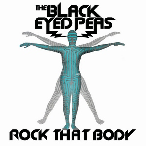

Following the commercial failures of their previous albums and singles, there was doubt over whether the Black Eyed Peas would continue to record together. A&R executive Ron Fair approached them and suggested a crossover to a more mainstream pop sound. will.i.am in particular resisted the idea for fear that they would be seen as sellouts. However, after discussions and some writing sessions, the idea was pursued. After the release of 'Where is the Love' Taboo would claim on the topic of selling out that if he was going to sell out, he'd "rather be selling out arenas than selling out of my trunk on the corner of my block."
Where is the Love is a protest song in its lyrics, but takes an intersectional approach to societal criticism from a racial justice perspective. Although initially intended as a vessel to post-9/11 anxiety, the song discusses the many issues that the 9/11 attacks touched, which include but are not limited to terrorism, US government hypocrisy, racism, gang crime, pollution, war and intolerance, with the call for love in the chorus as the element tying these together. The lyric "Overseas, yeah, we try'na stop terrorism - but we still got terrorists here living - in the USA, the big CIA - the Bloods and the Crips and the KKK" suggests these organisations being terrorists too - however, in the later live performance of One Love Manchester the inclusion of the CIA was censored. The song was released during the Iraq war and alludes to it and its casus belli with the lyric "A war's going on but the reason's undercover" in the bridge. The song also alludes to capitalism and lack of self confidence, with the lyrics "In this world that we're living - People keep on giving in - Making wrong decisions only visions of them dividends" and "Most of us only care about money making - Selfishness got us following the wrong direction." The song has a tempo of 94 BPM. Will.i.am laid the track's iconic main rhythm over the chord progression, which he claimed is inspired by that of a human heartbeat. “I was like, 'this song needs a heartbeat.' I just liked the pull and the call of response of the human heart – a beat, a rhythm that we hear everyday subconsciously, without paying attention to it.”
Co-produced by French DJ/producer David Guetta, the song heavily samples from Rob Base and DJ E-Z Rock's "It Takes Two", making use of the line "I wanna rock right now" multiple times, as well as the drum break, and part of the "Yeah! Woo!" line. The Black Eyed Peas use Auto-Tune throughout the song, and Fergie's voice has been notably high-pitched. Spin described "Rock That Body" as "trance-y". The song is most known to critics as a robotic party track on the album. The song has been compared to be stylistically similar to Flo Rida, whose song "Club Can't Handle Me" (from the motion picture Step Up 3D) Guetta would later go on to produce.
Fraser McAlpine of the BBC Chart Blog gave "Rock That Body" three out of five stars and called it "a party banger". "Rock That Body" was well-reviewed by Mike Schiller of PopMatters. Alex Fletcher of Digital Spy gave the song a positive review stating: "It's got plenty of pounding beats, synths that sound like they've been filled with Red Bull and more twisted vocal effects than an mp3 of Akon cutting loose in a vocoder factory. It's pretty simple stuff and it will no doubt grate something rotten on the 36th listen..."